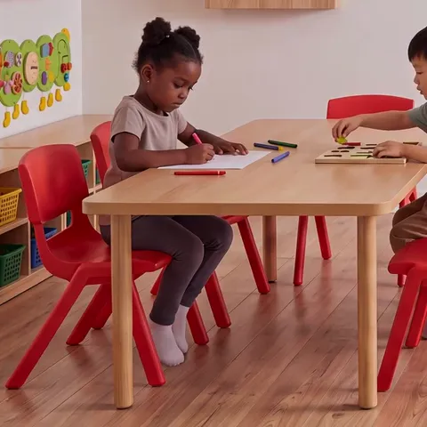

Quotes take me three hours every night. I run a six-van electrical shop.
Talkerstein
Three hours a night is about sixty hours a month — roughly a part-time wage in unbilled time. For a shop your size the fix is usually the same: a price book the quote builds itself from, so you pick the job and it writes the numbers.
Here is what that looks like, and what it would take.
Demo
Quote builder
Panel upgrade, 200A$2,400
Permit & inspection$385
Labour, 2 days$1,760
Total$4,545
Built from your own price book in about four minutes.
What it takes
Quoting system
$6,800fixed · 3 weeks
Price book, quote builder, e-signature, and a follow-up that chases the ones you never hear back on.
What about the ones that go quiet after I send them?
Talkerstein
That is the bigger number, usually. Across the trades shops we have built for, a two-touch follow-up brings back about a fifth of the quotes that would otherwise die.
Demo
Follow-up, running
Quote sentMon
ReminderThu
Last callNext Tue
Recovered this month$11,200
Add on
Book straight from the quote
$2,100fixed · 1 week
Thursday, 14 Jan
8:0010:3013:0015:30
Van 3 · DaniConfirmed
It answers from our own work.Real quotes.

Real timelines.And it says when we’re wrong.
Web
Brand
SEO
Automation
AI
Ads
Strategy
Ecomm
Support
Technology should solve problems, not create more work.
Explore how automation, AI, web development, and connected business systems can help your organization operate more efficiently, serve customers better, and create new opportunities.
Seven to nine weeks. The French pass adds about ten days — we’ve shipped eleven EN/FR builds.
Chocolate Charm
CleverPays
+9 more
Ideas are only as good as what they accomplish.
See how we turn business challenges into practical digital solutions. Explore the websites, systems, automations, and digital experiences we’ve designed and developed.
Contact formWe’ll be in touch in 2–3 business days
Ask anything…
Good technology starts with understanding your business.
We’re a technology consulting partner helping businesses make better use of digital tools. We bring strategy, creative thinking, and technical expertise together to build solutions that work.